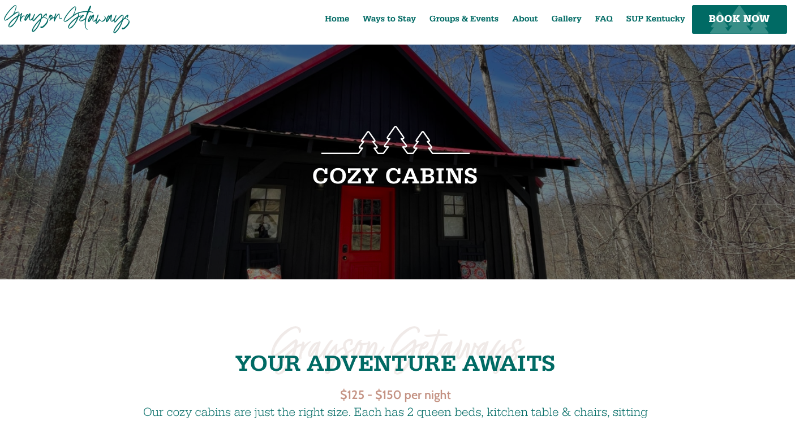
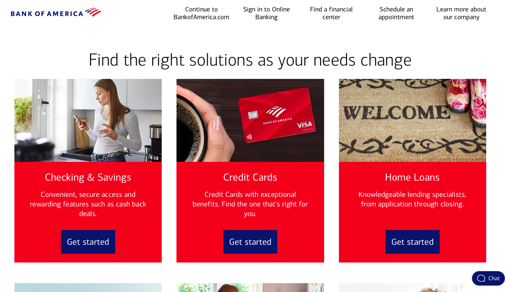

Visual Hierarchy
Grayson Getaways
This website is a good example of Visual Hierarchy. It shows as a first element a photo of a cabin and then it denote a title that suggest the primary purpose of the page.
Hick's Law
Bank of America
This website is a good example of Hick's Law because the page is display with a variety of option for the user to opt.The website has simple and enough options with a good functionality where the user can have a good and fast response according to his needs.
Fitt's Law
Disney Plus
This is a great example of Fitts's Law. The icons stand out on the page. The use can easly click on it, the color of the buttons are deffined in a blue color which contrast with the whole color and design of the page.